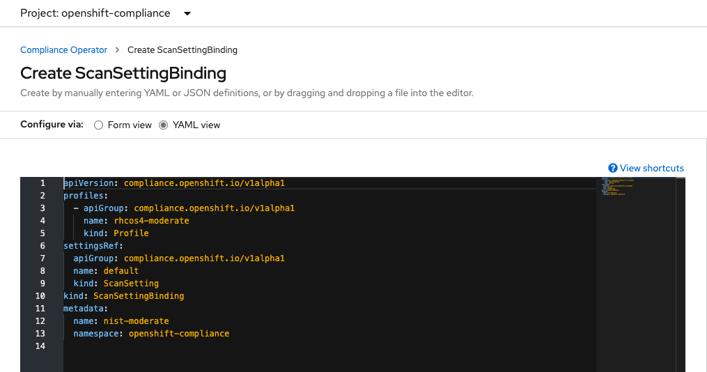

OpenShift Compliance with Compliance Operator
Prerequisites
- OpenShift 4.6+
- Cluster-admin user access
Compliance Operator
- Install Compliance Operator from OperatorHub
[Optional] Verify Compliance Operator
Check compliance profile
oc get profiles.compliance -n openshift-complianceOutput example
NAME AGE ocp4-cis 8m8s ocp4-cis-node 8m8s ocp4-e8 8m8s ocp4-moderate 8m7s ocp4-moderate-node 8m7s ocp4-nerc-cip 8m7s ocp4-nerc-cip-node 8m7s ocp4-pci-dss 8m7s ocp4-pci-dss-node 8m7s rhcos4-e8 8m2s rhcos4-moderate 8m2s rhcos4-nerc-cip 8m1sCheck detail of profile
oc get -o yaml profiles.compliance ocp4-cis -n openshift-complianceOutput example
... rules: - ocp4-accounts-restrict-service-account-tokens - ocp4-accounts-unique-service-account - ocp4-api-server-admission-control-plugin-alwaysadmit - ocp4-api-server-admission-control-plugin-alwayspullimages - ocp4-api-server-admission-control-plugin-namespacelifecycle - ocp4-api-server-admission-control-plugin-noderestriction ...Check details of rule
oc get -o yaml rules.compliance ocp4-accounts-unique-service-account -n openshift-compliance
Check for default ScanSetting
List all ScanSetting
oc get scansettings -n openshift-complianceResult
NAME AGE default 35m default-auto-apply 35mCheck for default ScanSetting
oc describe scansettings default -n openshift-complianceOutput example, scheduled at 1AM everyday and apply to both master and worker node and use block storage (RWO) for stored result
Raw Result Storage: Pv Access Modes: ReadWriteOnce Rotation: 3 Size: 1Gi Roles: worker master Scan Tolerations: Effect: NoSchedule Key: node-role.kubernetes.io/master Operator: Exists Schedule: 0 1 * * * Events: <none>CIS Profile
To start scan, create ScanSettingBinding. Scan will be started immediately after save
Use Admin Console to create ScanSettingBinding, default is rhcos4-moderate and use default ScanSetting

Add opc4-cis and ocp4-cis-node profiles for CIS compliance to ScanSettingBinding or add ocp4-pci-dss and ocp4-pci-dss-node for PCI-DSS compliance
apiVersion: compliance.openshift.io/v1alpha1 profiles: - apiGroup: compliance.openshift.io/v1alpha1 name: ocp4-cis-node kind: Profile - apiGroup: compliance.openshift.io/v1alpha1 name: ocp4-cis kind: Profile settingsRef: apiGroup: compliance.openshift.io/v1alpha1 name: default kind: ScanSetting kind: ScanSettingBinding metadata: name: cis-profile namespace: openshift-complianceor use CLI
oc apply -f manifests/cis-profile.yaml oc apply -f manifests/pci-dss-profile.yaml oc describe scansettingbinding/cis-profile -n openshift-compliance|grep -A14 "Status:" oc describe scansettingbinding/pci-dss-profile -n openshift-compliance|grep -A14 "Status:"Check for status
Status: Conditions: Last Transition Time: 2022-04-12T08:00:27Z Message: The scan setting binding was successfully processed Reason: Processed Status: True Type: Ready Output Ref: API Group: compliance.openshift.io Kind: ComplianceSuite Name: cis-profile Events: Type Reason Age From Message ---- ------ ---- ---- ------- Normal SuiteCreated 10s scansettingbindingctrl ComplianceSuite openshift-compliance/cis-profile createdCheck ComplianceScan tab

or use CLI
watch -d oc get compliancescan -n openshift-complianceOutput
NAME PHASE RESULT ocp4-cis RUNNING NOT-AVAILABLE ocp4-cis-node-master RUNNING NOT-AVAILABLE ocp4-cis-node-worker RUNNING NOT-AVAILABLE ocp4-pci-dss RUNNING NOT-AVAILABLE ocp4-pci-dss-node-master LAUNCHING NOT-AVAILABLE ocp4-pci-dss-node-worker LAUNCHING NOT-AVAILABLEWhen compliance scan is completed
NAME PHASE RESULT ocp4-cis DONE NON-COMPLIANT ocp4-cis-node-master DONE NON-COMPLIANT ocp4-cis-node-worker DONE NON-COMPLIANT ocp4-pci-dss DONE NON-COMPLIANT ocp4-pci-dss-node-master DONE NON-COMPLIANT ocp4-pci-dss-node-worker DONE NON-COMPLIANT
Check result
Count for FAIL
oc get compliancecheckresult -n openshift-compliance | grep FAIL NUM_OF_CIS_FAILED_BEFORE_REMIDIATE=$(oc get compliancecheckresult -n openshift-compliance | grep FAIL|grep cis|wc -l) NUM_OF_PCI_DSS_FAILED_BEFORE_REMIDIATE=$(oc get compliancecheckresult -n openshift-compliance | grep FAIL|grep pci-dss|wc -l)Output
ocp4-pci-dss-node-worker-kubelet-eviction-thresholds-set-soft-imagefs-available FAIL medium ocp4-pci-dss-node-worker-kubelet-eviction-thresholds-set-soft-imagefs-inodesfree FAIL medium ocp4-pci-dss-node-worker-kubelet-eviction-thresholds-set-soft-memory-available FAIL medium ocp4-pci-dss-node-worker-kubelet-eviction-thresholds-set-soft-nodefs-available FAIL medium ocp4-pci-dss-node-worker-kubelet-eviction-thresholds-set-soft-nodefs-inodesfree FAIL mediumCheck for result description for ocp4-cis-api-server-encryption-provider-config
oc describe compliancecheckresult/ocp4-cis-api-server-encryption-provider-config -n openshift-complianceOutput
... Description: Configure the Encryption Provider etcd is a highly available key-value store used by OpenShift deployments for persistent storage of all REST API objects. These objects are sensitive in nature and should be encrypted at rest to avoid any disclosures. Id: xccdf_org.ssgproject.content_rule_api_server_encryption_provider_config Instructions: Run the following command: $ oc get apiserver cluster -ojson | jq -r '.spec.encryption.type' The output should return aescdc as the encryption type. ... Severity: medium Status: FAILED Events: <none>
Fix failed policies with ComplianceRemediation
List ComplianceRemediation
oc get ComplianceRemediation -n openshift-complianceOutput
NAME STATE ocp4-cis-api-server-encryption-provider-cipher NotApplied ocp4-cis-api-server-encryption-provider-config NotApplied ocp4-cis-node-master-kubelet-configure-event-creation NotApplied ocp4-cis-node-master-kubelet-configure-tls-cipher-suites NotApplied ocp4-cis-node-master-kubelet-enable-iptables-util-chains NotApplied ocp4-cis-node-master-kubelet-enable-protect-kernel-defaults NotApplied ocp4-cis-node-master-kubelet-enable-protect-kernel-sysctl NotApplied ocp4-cis-node-master-kubelet-eviction-thresholds-set-hard-imagefs-available NotApplied ocp4-cis-node-master-kubelet-eviction-thresholds-set-hard-imagefs-available-1 NotApplied ...Fix failed ocp4-cis-api-server-encryption-provider-config and ocp4-cis-api-server-encryption-provider-cipher policy with ComplianceRemidiation
oc patch -n openshift-compliance complianceremediation \ ocp4-cis-api-server-encryption-provider-config -p '{"spec":{"apply":true}}' --type='merge' oc patch -n openshift-compliance complianceremediation \ ocp4-cis-api-server-encryption-provider-cipher -p '{"spec":{"apply":true}}' --type='merge'Check result
oc get ComplianceRemediation/ocp4-cis-api-server-encryption-provider-config -n openshift-complianceOutput
NAME STATE ocp4-cis-api-server-encryption-provider-config Applied
Re-run scan
Annotate ComplianceScans to rescan or use script
for scan in $(oc get compliancescans -n openshift-compliance -o custom-columns=NAME:.metadata.name --no-headers) do oc annotate compliancescans $scan compliance.openshift.io/rescan= -n openshift-compliance done watch -d oc get compliancescans -n openshift-complianceResult
NAME PHASE RESULT ocp4-cis DONE NON-COMPLIANT ocp4-cis-node-master DONE NON-COMPLIANT ocp4-cis-node-worker DONE NON-COMPLIANT ocp4-pci-dss DONE NON-COMPLIANT ocp4-pci-dss-node-master AGGREGATING NOT-AVAILABLE ocp4-pci-dss-node-worker AGGREGATING NOT-AVAILABLERecheck policy ocp4-cis-api-server-encryption-provider-config
oc describe compliancecheckresult/ocp4-cis-api-server-encryption-provider-config -n openshift-compliance | grep -A3 SeverityOutput
Severity: medium Status: PASS Events: <none>
Change ScanSettingBinding cis-and-moderate-profile to use ScanSetting default-auto-apply
oc patch -n openshift-compliance ScanSettingBinding cis-profile -p '{"settingsRef":{"name":"default-auto-apply"}}' --type='merge' oc patch -n openshift-compliance ScanSettingBinding pci-dss-profile -p '{"settingsRef":{"name":"default-auto-apply"}}' --type='merge'Output
scansettingbinding.compliance.openshift.io/cis-profile patched scansettingbinding.compliance.openshift.io/pci-dss-profile patched
Compare number of failed compliance before and after remidiate
NUM_OF_CIS_FAILED_AFTER_REMIDIATE=$(oc get compliancecheckresult -n openshift-compliance | grep FAIL|grep cis|wc -l)
NUM_OF_PCI_DSS_FAILED_AFTER_REMIDIATE=$(oc get compliancecheckresult -n openshift-compliance | grep FAIL|grep pci-dss|wc -l)
echo "Number of failed CIS compliance reduce from $NUM_OF_CIS_FAILED_BEFORE_REMIDIATE to $NUM_OF_CIS_FAILED_AFTER_REMIDIATE"
Openscap Report
Generate HTML reports for latest scan results by using oscap tools. Container image with oscap tools already build with this Dockerfile
CIS
- Create [pods](manifests/cis-report.yaml) to mount to CIS reports PVC
```bash
oc create -f manifests/cis-report.yaml -n openshift-compliance
watch oc get pods -l app=report-generator -n openshift-compliance
```
Output
```bash
NAME READY STATUS RESTARTS AGE
cis-master-report 1/1 Running 0 54s
cis-report 1/1 Running 0 55s
cis-worker-report 1/1 Running 0 55s
```

- Generate CIS reports with *oscap*
```bash
REPORTS_DIR=compliance-operator-reports
mkdir -p $REPORTS_DIR
reports=(cis-report cis-worker-report cis-master-report)
for report in ${reports[@]}
do
DIR=$(oc exec -n openshift-compliance $report -- ls -1t /reports|grep -v "lost+found"|head -n 1)
for file in $(oc exec -n openshift-compliance $report -- ls -1t /reports/$DIR)
do
echo "Generate report for $report from $file"
oc exec -n openshift-compliance $report -- oscap xccdf generate report /reports/$DIR/$file > $REPORTS_DIR/$report-$file.html
done
done
oc delete pods -l app=report-generator -n openshift-compliance
```
Sample output
```bash
Generate report for cis-report from ocp4-cis-api-checks-pod.xml.bzip2
Generate report for cis-worker-report from openscap-pod-f73cef8b1e6a98fa8233b84163f62300c60df10e.xml.bzip2
Generate report for cis-worker-report from openscap-pod-ac5e7838c12d9bea905d474069522b5b502ad724.xml.bzip2
Generate report for cis-master-report from openscap-pod-47877a9e79536f85e552662526e0cd247278bf47.xml.bzip2
Generate report for cis-master-report from openscap-pod-3c5d5e72bf73ebbdbc4ff5cf27f6c3443534e9d6.xml.bzip2
Generate report for cis-master-report from openscap-pod-cd506d793bc03ad62909572b95df1d2d94d13a3e.xml.bzip2
```
PCI-DSS
- Create [pods](manifests/cis-report.yaml) to mount to PCI-DSS reports PVC
```bash
oc create -f manifests/pci-dss-report.yaml -n openshift-compliance
watch oc get pods -l app=report-generator -n openshift-compliance
```
Output
```bash
NAME READY STATUS RESTARTS AGE
pci-dss-master-report 1/1 Running 0 11s
pci-dss-report 1/1 Running 0 12s
pci-dss-worker-report 1/1 Running 0 12
```
- Generate PCI-DSS reports with *oscap*
```bash
REPORTS_DIR=compliance-operator-reports
mkdir -p $REPORTS_DIR
reports=(pci-dss-report pci-dss-worker-report pci-dss-master-report)
for report in ${reports[@]}
do
DIR=$(oc exec -n openshift-compliance $report -- ls -1t /reports|grep -v "lost+found"|head -n 1)
for file in $(oc exec -n openshift-compliance $report -- ls -1t /reports/$DIR)
do
echo "Generate report for $report from $file"
oc exec -n openshift-compliance $report -- oscap xccdf generate report /reports/$DIR/$file > $REPORTS_DIR/$report-$file.html
done
done
oc delete pods -l app=report-generator -n openshift-compliance
```
Sample output
```bash
Generate report for cis-report from ocp4-cis-api-checks-pod.xml.bzip2
Generate report for cis-worker-report from openscap-pod-f73cef8b1e6a98fa8233b84163f62300c60df10e.xml.bzip2
Generate report for cis-worker-report from openscap-pod-ac5e7838c12d9bea905d474069522b5b502ad724.xml.bzip2
Generate report for cis-master-report from openscap-pod-47877a9e79536f85e552662526e0cd247278bf47.xml.bzip2
Generate report for cis-master-report from openscap-pod-3c5d5e72bf73ebbdbc4ff5cf27f6c3443534e9d6.xml.bzip2
Generate report for cis-master-report from openscap-pod-cd506d793bc03ad62909572b95df1d2d94d13a3e.xml.bzip2
```
Reports
Sample reports of OpenShift clusters with auto-remidiation
Sample reports of OpenShift clusters with secure kubelet config for machine config master and worker.
kubelet config
kubeletConfig: eventRecordQPS: 5 tlsCipherSuites: - TLS_ECDHE_RSA_WITH_AES_256_GCM_SHA384 - TLS_ECDHE_ECDSA_WITH_AES_256_GCM_SHA384 - TLS_ECDHE_RSA_WITH_AES_128_GCM_SHA256 - TLS_ECDHE_ECDSA_WITH_AES_128_GCM_SHA256Secure /etc/sysctl.d/90-kubelet.conf for
vm.overcommit_memory=1 vm.panic_on_oom=0 kernel.panic=10 kernel.panic_on_oops=1 kernel.keys.root_maxkeys=1000000 kernel.keys.root_maxbytes=25000000